A local web service for publishing, finding and closing lost-and-found notices on a university campus — the completed, tested and documented version.
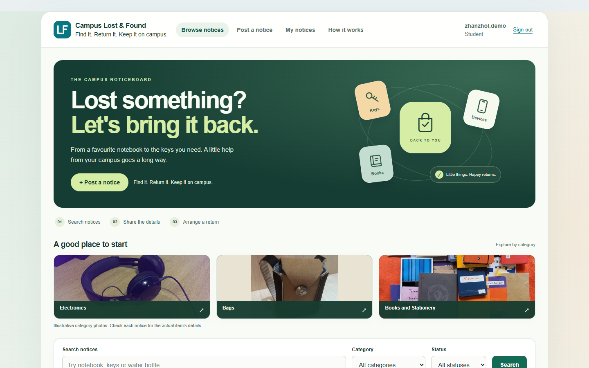
Students who lose an item on campus depend on scattered chats and paper notes; in our Stage 1 survey, 4 of 10 respondents said a return had taken more than three days (a small convenience sample). Campus Lost & Found gives the campus one place to publish, search and close lost-and-found notices. The final version is a Flask web application with an SQLite database, private photo uploads, owner and administrator permissions, an administrator panel with analytics, a user-testing timer and a clearly labelled smart-locker simulation. All Must requirements now work, including sign-in with university Microsoft accounts, which was verified with a real account. On the final code, 96 of 96 automated tests passed, all five invalid-access attempts were blocked, the 95th-percentile search time was 45 ms against a two-second target, and 20 of 20 availability checks passed over 30 minutes. In the final test, 3 of 3 people outside the team published a notice within two minutes and 3 of 3 found the target notice within one minute. The system runs on one laptop over local HTTP; hosting in Kazakhstan with HTTPS is the main future work.
Executive summary: 186 words.
| Item | What it means here |
|---|---|
| Final system | GitHub main, 8 Nov 2026: the Endterm commit a7e5c74 (6 Nov; identical to SE-2623_Endterm.zip, 1,164 files compared) plus the Final commits, which add this documentation and Microsoft sign-in (microsoft_auth.py, its tests, small template changes) and remove the old “LOCAL DEMO” bar. Microsoft sign-in is used when the app is started with START_MICROSOFT.bat; START.bat keeps the offline local-account mode. |
| Evidence re-run | All tests, measurements and screenshots in this report were produced again on 8 November 2026 on an isolated copy of that code (Windows 11, bundled Python 3.14.8, Microsoft Edge 157). After the Final code changes the test suite, SC3, the account checks, the browser checks and all screenshots were run again; the search benchmark and the 30-minute monitor (made before the changes) cover server code that did not change. Files: Final/Evidence/. |
| Data | All notices and accounts are synthetic teaching data (122 notices, 20 accounts, 10 categories). No real campus data is used. |
| Fact / interpretation | Measured results are stated with method and sample. Interpretation is marked “we interpret”; recommendations are in Section 9. |
| Not claimed | Public hosting, HTTPS, LAN access and a physical smart locker do not exist. Microsoft sign-in works on the demo laptop (http://localhost:5055) only. |
On our campus, a student who loses or finds an item posts in group chats, tells a guard or puts up a paper note. Each channel reaches only part of the campus, posts scroll away, and nobody knows when an item has been returned. Our Stage 1 hypothesis was that one searchable noticeboard tied to university accounts would make matching faster.
Source: SE-2623 Stage 1 student survey, October 2026 (SE-2623 team, 2026a, p. 2). The sample is small and not representative of all students; we treat it as a signal that the problem exists, not as a measurement of its size.
The project is a small information system for a campus service, the kind of ICT use in public-sector and education services covered in Week 10: it replaces informal, paper-and-chat processes with a shared, searchable record, while keeping a human in the loop for the actual hand-over (Parsons, 2022, Module 9; Nurpeisova & Kaidash, 2017). The Final brief asks for the Stage 1 design, Assignment 3 database and security, Assignment 4 multimedia and Stage 2 prototype as one finished system (Astana IT University, 2026); this report follows that structure, building on the earlier reports (SE-2623 team, 2026a, 2026b) and the repository (SE-2623 team, 2026c).
| User group | Need | What they can do in the final system |
|---|---|---|
| Student | Find a lost item or return a found one | Register a local account, sign in, publish a lost/found notice with one photo, search by title, filter by category and status, open details, contact the author by email draft, edit own notice, mark it returned, see “My notices”. |
| Administrator | Keep the noticeboard relevant and safe | Everything a student can do, plus: admin overview with live counts, notice and user lists with search, removal of misuse with a confirmation page, analytics with CSV export, the user-testing timer and the smart-locker simulation. |
Out of scope since Stage 1: payments, live chat, delivery and automatic item matching. They were excluded to keep the core flow — publish, search, contact, close — reliable. Stage 1 defined eight functional requirements (F1–F8), four non-functional requirements (N1–N4, all Must) and three success criteria (SC1–SC3). Their wording and priorities are kept unchanged in Section 3; no target was weakened.
Wording/priority: Stage 1 report pp. 3–4; Stage 2 status: Stage 2 report p. 5; evidence re-run 8 November 2026 (tests in Campus_Lost_Found/, screenshots S01–S16 in Final/Evidence/screenshots/).
| ID | Requirement (acceptance check) | Priority | Stage 2 | Final | Evidence |
|---|---|---|---|---|---|
| F1 | University account sign-in (reject identities outside astanait.edu.kz) | Must | ◐ Partly | ✓ Done | Real sign-in with an Astana IT University Microsoft account on 8 Nov 2026, 16:40 UTC (audit microsoft_login_success, single-tenant app in the university Entra directory); 13 tests in test_microsoft_auth.py; other domains rejected (SC3-1, test_registration_rejects_invalid_domain…). |
| F2 | Publish a lost or found notice (valid notice appears in the list) | Must | ✓ Done | ✓ Done | test_owner_create_edit_and_return_persist_after_application_restart; browser run created notice #123 (S04 → S05). |
| F3 | Attach one photo (JPG/PNG up to 5 MB) | Should | ✓ Done | ✓ Done | test_photo_file_limit_pixel_limit_and_request_limit, test_png_photo_is_supported, test_photo_is_reencoded_without_metadata…; S04 photo picker, S05 stored photo. |
| F4 | Browse notices and open details (list and details show saved content) | Must | ✓ Done | ✓ Done | test_stored_markup_is_escaped_in_browse_and_detail; S02, S03, S07. |
| F5 | Search title; filter by category (seeded matching notices appear) | Must | ✓ Done | ✓ Done | test_search_treats_sql_and_like_metacharacters_as_literal_text, test_browse_retains_valid_filters…; browser query “red notebook” + Books and Stationery → 1 result, “Red notebook” (S06). |
| F6 | Contact via university email (contact opens the author’s email) | Must | ✓ Done | ✓ Done | test_contact_is_mailto_and_admin_navigation_is_not_shown_to_student; browser check: link is mailto:student01.demo@…?subject=…%234 (S07). The site sends no email itself. |
| F7 | Edit own notice; mark returned (owner changes persist after refresh) | Must | ✓ Done | ✓ Done | Persistence after app restart (test above); test_student_cannot_edit_or_close_another_owners_notice; browser: badge “Returned” (S08). |
| F8 | Administrator removes misuse (admin succeeds; student is denied) | Must | ✓ Done | ✓ Done | test_admin_confirmation_is_read_only_until_posted, test_student_cannot_remove_notice_even_with_forged_admin_role; browser removal of #123 (S12); student gets 403 (SC3-5). |
Instructor comments on Stage 1: none were reported to the team (Stage 2 report, p. 9), so no Stage 1 comment remains open.
| ID | Requirement (check) | Stage 2 | Final | Evidence and method |
|---|---|---|---|---|
| N1 | Search p95 ≤ 2 s with 10 concurrent users | ✓ Done p95 81 ms | ✓ Done | p95 44.9 ms, max 54.6 ms, median 28.8 ms; 10 signed-in sessions × 10 title searches, started together. Loopback HTTP until the full HTML is received; images and painting excluded. search_performance_final.json |
| N2 | Enforce university identity and owner/admin rights | ◐ Partly | ✓ Done | Identity: Microsoft sign-in verified with a real university account; new accounts only via Microsoft in that mode (test). Rights: SC3 5/5 blocked; every /admin/* page returns 403 to students and 200 to the administrator (account_checks.json). Synthetic demo accounts are kept for the offline demo. |
| N3 | Support 360 px screens and keyboard input (core screens, labels, focus order) | ◐ Partly | ✓ Done | Edge at 360 × 760 px: 12 of 12 pages without horizontal scrolling; all form fields on browse, post and sign-in have labels; Tab reaches every control of the post form in visual order with a visible focus ring (M01–M04, K01; browser_checks.json). Automated browser check — not tested by users with assistive technology. |
| N4 | Pass 20/20 checks during a 30-minute demo (core pages plus retry when offline) | ◐ Partly | ✓ Done | 20/20 authenticated checks of five core pages over 30 minutes (student + admin sessions; stability_30min_final.json). Offline retry in Edge: with the network cut the locker refresh reports that the result could not be confirmed; after reconnecting, “Refresh status” and a page reload both succeed. |
| Criterion | Target | Stage 2 result | Final result | Met? |
|---|---|---|---|---|
| SC1 · Testers post a notice within 2 minutes | ≥ 80 % (Stage 1: 4/5), ≤ 120 s | Stage 2 report: Pending. Team-reported afterwards: 5/5 (70–92 s), no raw record | 3/3 within target times (s): 89, 84, 78 | ✓ Yes |
| SC2 · Testers find an item within 1 minute | ≥ 80 % (Stage 1: 4/5), ≤ 60 s | Stage 2 report: Pending. Team-reported afterwards: 5/5 (45–53 s), no raw record | 3/3 within target times (s): 40, 45, 42 | ✓ Yes |
| SC3 · Invalid-access checks are blocked | 5/5 | 5/5 | 5/5 (8 November 2026) | ✓ Yes |
Stage 1 had one Should requirement, F3 (one photo). It is done. Beyond Stage 1 the team added an administrator panel, analytics, a user-testing timer, a backup with restore check and a smart-locker simulation; these are extras, not substitutes for any Must requirement.
The diagram shows what actually runs, not the Stage 1 plan. Browser and server share one laptop and talk over the loopback address 127.0.0.1:5055; the server refuses other host names, so phones or other computers on the same Wi-Fi cannot connect.
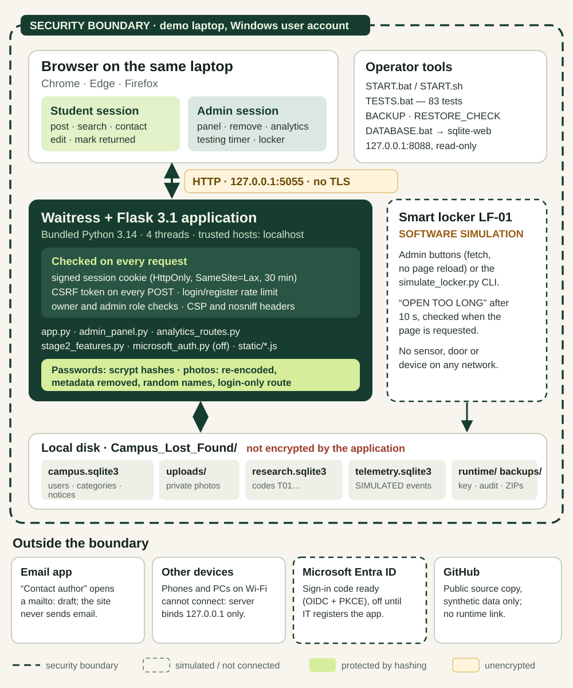
Nothing. Traffic is local HTTP without TLS; files on disk are not encrypted by the application.
Passwords: scrypt hashes. Session cookie: signed with a random 256-bit key in runtime/session.key — tamper-proof, but readable.
Every page except sign-in and registration. Photos only through a signed-in route. Admin pages also need role = admin.
Nothing on the network. The GitHub repository is public and holds synthetic data only, including demo password hashes.
LAN or Internet access, HTTPS, a physical locker. Microsoft sign-in runs from the same laptop (localhost redirect).
| Area | Stage 1 design | Final (as built) | Reason |
|---|---|---|---|
| Identity | University SSO via the university identity provider | Microsoft Entra sign-in (OpenID Connect + PKCE) in the university directory; local demo accounts kept for offline use | Works as planned; local accounts stay because the demo must run without Internet. |
| Network | Wi-Fi / HTTPS, DNS-resolved host | Loopback HTTP only (127.0.0.1) | No TLS certificate or host; binding to loopback keeps unencrypted traffic off the network. |
| Hosting | Prototype server (deployment “needs setup”) | Waitress on the demo laptop; portable Windows runtime included | Free static hosts cannot run Flask + SQLite; KZ data-location rules (Section 5) need a deliberate choice. |
| Stored data | Planned disk encryption, restricted file access | Plain SQLite and photo files under data/ | Disk encryption is an operating-system setting, not part of the app; demo data is synthetic. |
| Databases | One SQLite database + photo files | Main DB + separate research DB + separate telemetry DB | Test timings and simulated sensor events must never mix with notices. |
| Administrator UI | One moderation screen with confirmation | Admin panel, notice and user lists, analytics, CSV export | Stage 2 required data analysis inside the product. |
| Smart component | None | Smart-locker LF-01 software simulation | Stage 2 smart-extension task; no hardware was bought. |
| Recovery | Offline copy of files | Full backup ZIP with SHA-256 manifest + non-destructive restore check | A single SQLite file is easy to lose or corrupt during a demo. |
| Team tools | VS Code, Git, Google Drive | Same; GitHub holds one upload commit | History was not committed per feature (see Section 9 and A3). |
| Layer | Technology (version) | Why it fits |
|---|---|---|
| Interface | HTML (Jinja2 3.1.6), CSS, small vanilla JS files | Works without a build step; pages still work with JavaScript disabled. |
| Application | Python 3.14.8, Flask 3.1.3, Werkzeug 3.1.9 | Small, readable code the whole team can explain. |
| Web server | Waitress 3.0.2, 4 threads | Production-grade WSGI server that runs on Windows. |
| Data | SQLite (Python sqlite3), sqlite-web 0.8.2 read-only inspector | One file, no server to install, constraints in SQL. |
| Media | Pillow 12.3.0 | Validates and re-encodes uploaded photos. |
| Quality | unittest (96 tests), custom benchmark and monitor scripts | No extra dependencies; runs from TESTS.bat. |
Figure 2. Schema from backend/schema.sql (main database, foreign keys ON, ON DELETE RESTRICT) and stage2_features.py (side databases). The telemetry notice_id is checked by application code, not by a cross-file foreign key.
| Data | Personal? | Physical location in the final configuration |
|---|---|---|
| Email address (account name) | Yes — identifies a person | Campus_Lost_Found/data/campus.sqlite3, table users, on the demo laptop’s local disk. |
| Password | Secret | Only the scrypt hash, same file. The plain password is never stored or logged. |
| Notice text, location, date, owner link | Can become personal when linked to the author | Same file, table notices. |
| Item photographs | Can contain faces or ID cards | data/uploads/, random 48-hex-character names, metadata removed, served only to signed-in users. |
| Test observations | Pseudonymous (T01…) | data/research.sqlite3; no names or emails are accepted. |
| Audit log, session key | Account ids, times | runtime/audit.jsonl, runtime/session.key. |
| Backups | All of the above | backups/campus_full_*.zip on the same disk (session key excluded). |
The shipped database is synthetic: 122 notices (96 open, 26 returned; 60 lost, 62 found), 20 accounts (1 administrator) and 10 categories. Its SHA-256 equals the frozen analysis copy in Analysis/frozen_campus.sqlite3, so the charts in Section 7 describe the delivered data.
| Threat | Control in the code | Verified by |
|---|---|---|
| Password theft from the DB | scrypt hashes; constant-time check with a dummy hash for unknown emails | test_passwords_use_independent_scrypt_hashes |
| Password guessing | 5 attempts per minute per address for login and registration | test_five_failed_logins_trigger_rate_limit… |
| SQL injection | Parameterised queries; LIKE wildcards escaped | test_sql_injection_cannot_bypass_login |
| Cross-site request forgery | Random token on every POST form, compared with hmac.compare_digest | test_missing_or_wrong_csrf_rejects_write |
| Cross-site scripting | Jinja auto-escaping; Content-Security-Policy default-src 'self' | test_stored_markup_is_escaped… |
| Acting on others’ data | Server-side owner check and role check on every change | SC3-4, SC3-5; 403 matrix |
| Malicious upload | Type, size (5 MiB) and pixel (12 MP) limits; re-encode; random name | test_invalid_photo_extension_type_bytes… |
| Forged Microsoft sign-in | state + nonce + PKCE; RS256 signature, issuer, audience, tenant, expiry and domain checked | test_microsoft_auth.py (13 tests) + real sign-in |
| Spreadsheet formulas in CSV | Cells starting with = + − @ are prefixed | test_csv_neutralizes_formulas… |
Controls follow common guidance for Flask applications and password and CSRF handling (Pallets, n.d.; OWASP Foundation, n.d.-a, n.d.-b).
Outside the boundary: anyone who can sign in to the laptop’s Windows account can copy the SQLite files, photos and backups; the application cannot stop that. Traffic is HTTP, which is acceptable only because it never leaves the machine.
What the law says (checked on adilet.zan.kz, 8 Nov 2026). The Law of the Republic of Kazakhstan No. 94-V “On Personal Data and Their Protection” (21 May 2013, last amended 14 Sep 2026) defines personal data as information about an identifiable person (Art. 1). Art. 12(2) requires personal data to be stored in a database or digital object located on the territory of Kazakhstan, and storage ends when the purpose of collection is achieved. Collection needs the subject’s consent (Arts. 7–8). Owners and operators must protect data from unauthorised access (Art. 22) and, in the Russian text, notify the authorised body of a breach within one working day of detecting it (Art. 25(2)(8)) (Republic of Kazakhstan, 2013/2026). The law does not name a ministry; the ministry currently publishing personal-data guidance is the Ministry of Artificial Intelligence and Digital Development (n.d.).
Our interpretation. Email addresses linked to notices are personal data. In the final configuration they exist only on the demo laptop, which stays in Kazakhstan. Two things would change that: (1) committing a database with real users to GitHub, whose servers are outside Kazakhstan — today the repository holds synthetic accounts only, and the data folder should be excluded from Git before any real use; (2) hosting the app on a foreign cloud region. We do not claim legal compliance; a real launch would need the university’s legal review.
| If the system were hosted publicly | What must change |
|---|---|
| Data location | Database, photos and backups in a data centre located in Kazakhstan (Art. 12(2)). |
| Transport and identity | HTTPS with a valid certificate and an HTTPS redirect URI for Microsoft sign-in; local demo accounts switched off. |
| Consent and retention | Consent text at registration; delete or anonymise returned notices after a fixed period. |
| Incidents | A named responsible person and a procedure to notify the authorised body within one working day. |
All screenshots were captured from the final build on 8 November 2026 at 1440 × 900 px, signed in as the synthetic student zhanzhol.demo. The notice “Blue notebook with star sticker” was created during this run and later removed by the administrator.
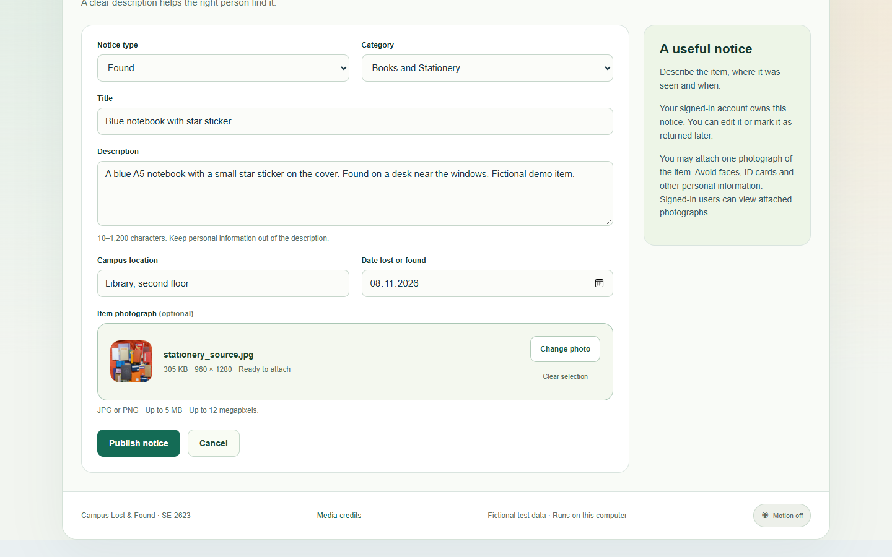
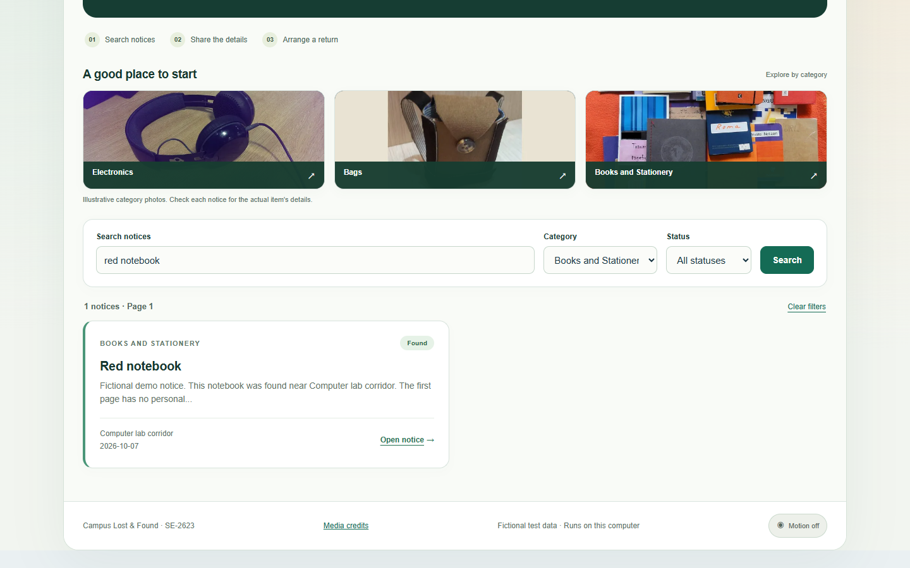
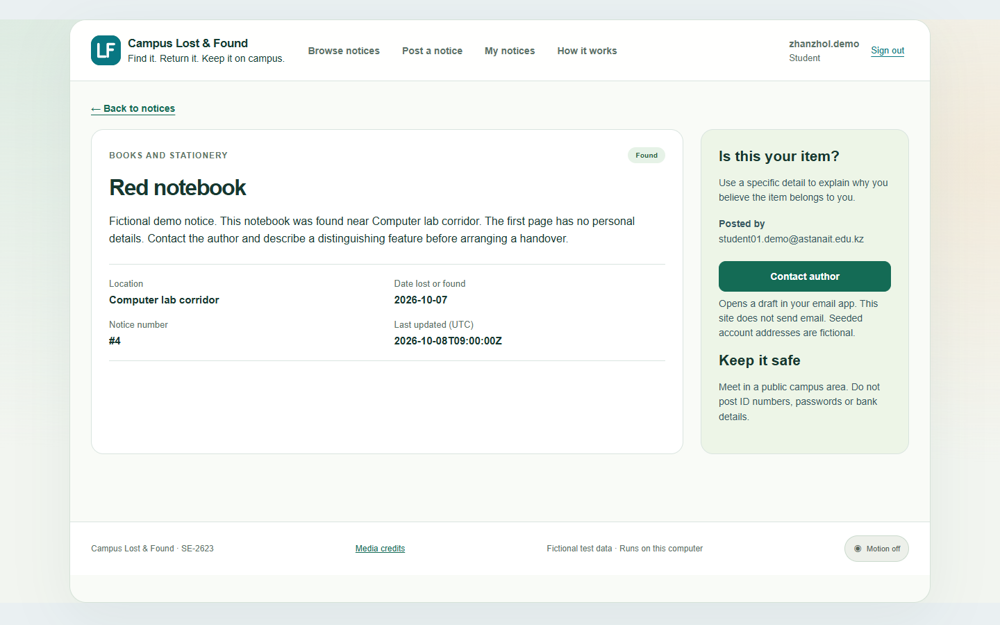
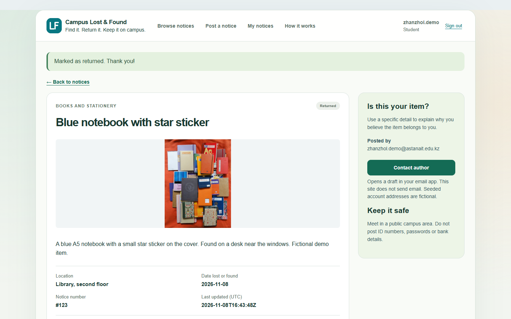
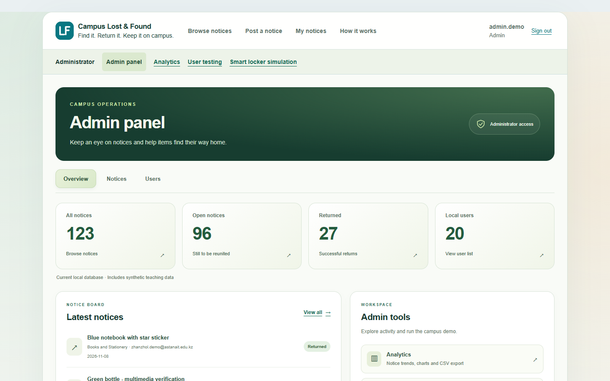
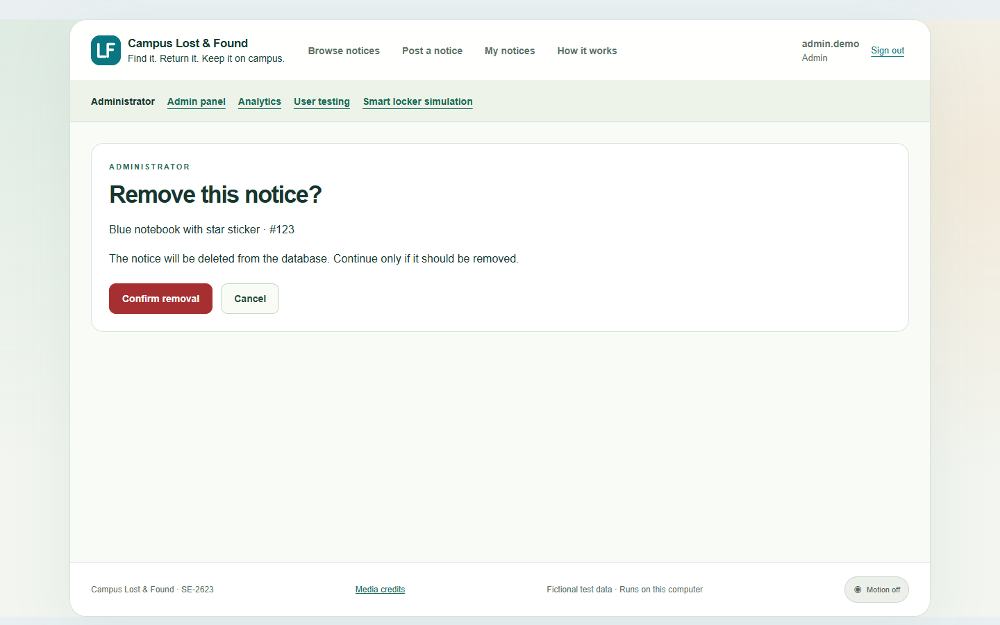
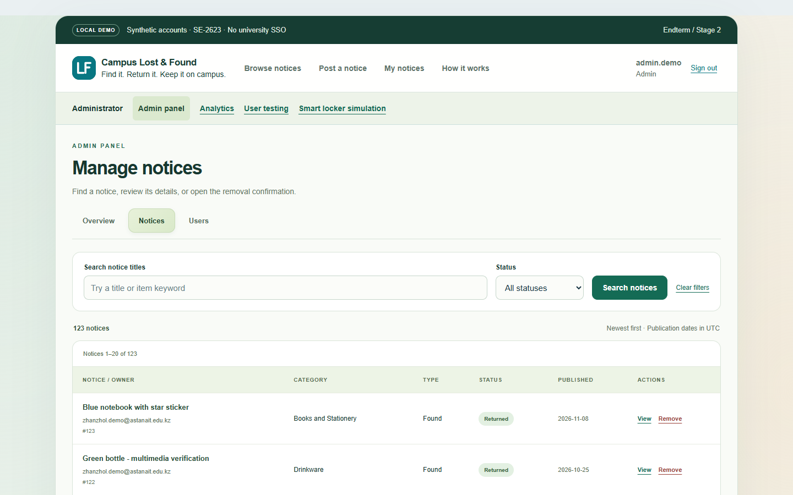
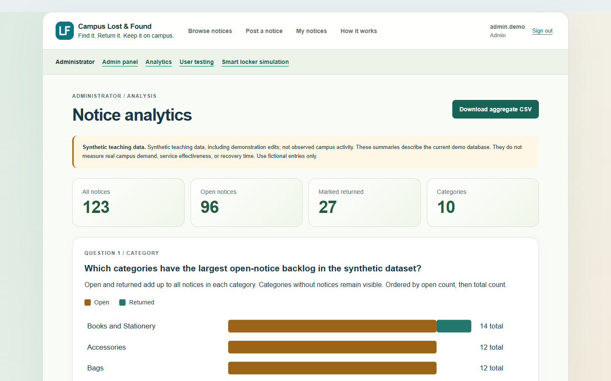
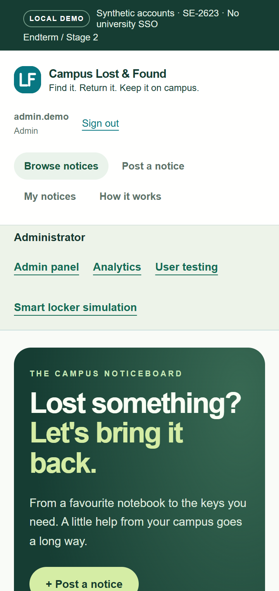
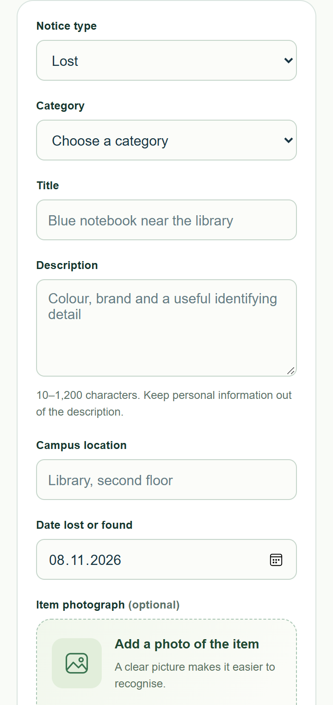
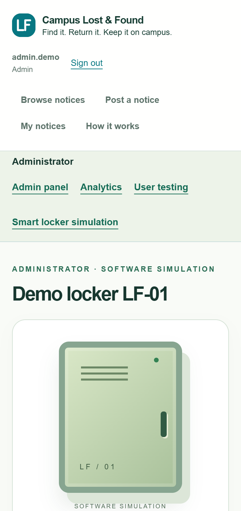
M01–M04 · 360 px. The same pages at a 360 × 760 px mobile viewport. On all 12 checked pages the page width equals the screen width (no sideways scrolling), in the spirit of WCAG 2.2 “Reflow” (W3C, 2023).
Observed limitation: at 360 px the header and both navigation bars take about the first screen before the content starts. It works, but a collapsible menu would shorten the path to “Post a notice”.
| Element | How it works in the final build | Evidence / limit |
|---|---|---|
| Item photos | One JPG/PNG per notice, ≤ 5 MiB and ≤ 12 MP; rotated by EXIF, scaled to ≤ 1600 px, re-encoded (JPEG quality 85) so metadata such as GPS is removed. | test_photo_is_reencoded_without_metadata_and_only_served_after_login |
| Category images | Three WebP illustrations (9–31 KB) replace 0.6–1.3 MB PNG originals; licences in static/media/CREDITS.txt. | Alternative text on every image: test_media_is_served_and_has_alternative_text |
| Hero illustration, locker door | Inline SVG/CSS drawings; the locker door shows the stored simulated state. | Decorative parts are aria-hidden. |
| Motion | Card and chart entrance animations, page transitions; a “Motion on/off” switch, and the system “reduce motion” setting is respected. | Content does not depend on animation; screenshots were taken with reduced motion. |
| Demo video | Re-recorded Final demo video: link to be added (Final/Video/). | Backup now: Assignment 4 video (2:14, 1920 × 1080, 30 fps) — youtu.be/76M3hSqR-7w, older interface, kept as a backup. |
An automated Edge session pressed Tab through the “Post a notice” page. Focus moved in visual order: skip link → header → navigation → back link → type → category → title → description → location → date → Choose photo → Publish notice → Cancel → footer. A visible focus ring was detected on every control except one reading inside the date field’s internal segments. All 12 form fields on the browse, post and sign-in pages have a programmatic label.
This is automated browser evidence, not an accessibility audit with assistive-technology users.
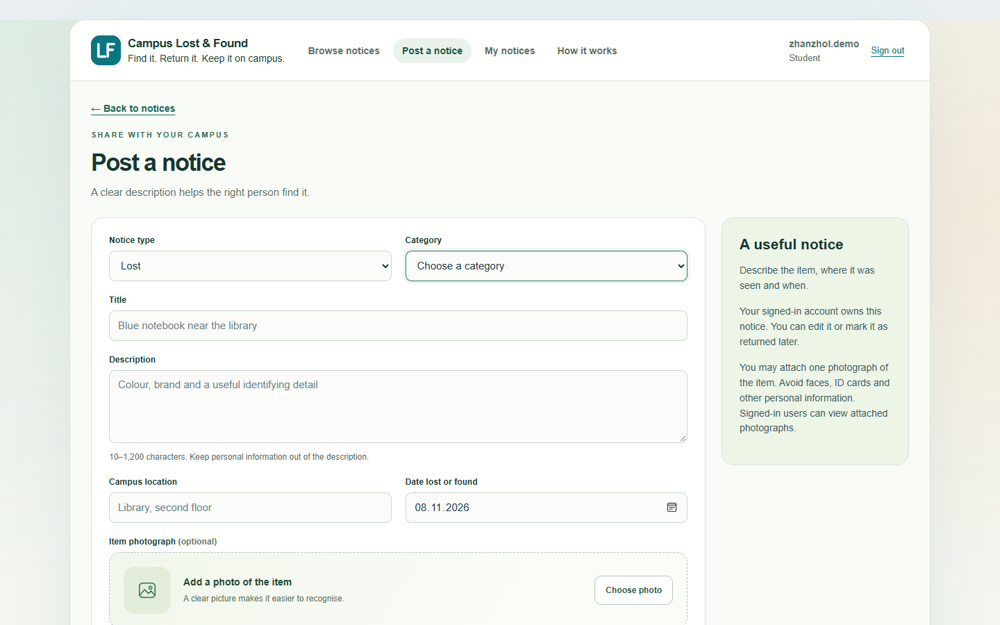
| Test file | Tests | What it covers |
|---|---|---|
| backend/test_backend.py | 14 | Schema constraints, seed data, transactions, read-only queries, backup/restore |
| test_app.py | 17 | Login, rate limit, SQL injection, CSRF, ownership, persistence, escaping, number limits |
| test_stage2_core.py | 11 | Registration, photo validation and re-encoding, mailto, role navigation |
| test_admin_panel.py | 11 | Admin-only access, counts, pagination, search, no password hashes in pages |
| test_analytics.py | 7 | Aggregates vs independent SQL, empty data, CSV safety, access |
| test_stage2_features.py | 14 | Research timer rules, consent, CSV; locker open/alert/close/reset |
| test_backup_full.py · test_media.py | 7 · 2 | Archive contents, hashes, traversal/corruption rejection · media and alt text |
| test_microsoft_auth.py (new) | 13 | Microsoft sign-in against simulated Microsoft: off when unconfigured, PKCE/state/nonce, RS256 signature, wrong issuer/audience/tenant/expiry, non-university email, display name escaping, registration closed in Microsoft mode |
Run: python\python.exe -B -m unittest discover -v in an isolated copy, 8 November 2026: Ran 96 tests in 42.2 s — OK. Log: Final/Evidence/test_suite_final.log.
| Attempt | Answer | Result |
|---|---|---|
| Register an address outside astanait.edu.kz | 200 | ✓ blocked |
| Sign in with an incorrect password | 200 | ✓ blocked |
| Anonymous visitor opens notice details | 302 | ✓ blocked |
| Student edits another owner's notice | 403 | ✓ blocked |
| Student opens and submits administrator removal | 403/403 | ✓ blocked |
Each check also verifies the database did not change (no new user, unchanged title, unchanged notice count).
20 of 20 checks passed, spread evenly over 30 minutes (14:44–15:14 UTC, 8 November 2026). Slowest response 58 ms. A check passes only with HTTP 200, the expected page content and no sign-in form.
Method (fixed before testing). Each participant is a volunteer outside the three-person team who agrees to take part. They use the student role on the final build with the same two task cards (Testing/TASK_CARDS_EN.txt): Task 1 — publish a found “Blue notebook” notice with given details; Task 2 — from a cleared noticeboard, find the “Red notebook” notice and say where it was found. The observer starts timing when the card is handed over and stops when the participant says the task is complete; one first attempt per task counts, failures are kept, and no coaching is given. A task counts as met if it is completed correctly, without help, within 120 s (publish) or 60 s (find). Stage 1 thresholds are 4 of 5 testers (80 %); with N participants the criterion is met when at least 80 % meet it.
| Success criterion | Target | Stage 2 result | Final result | Met? | Evidence |
|---|---|---|---|---|---|
| SC1 · Testers post a notice within 2 minutes | ≥ 80 % (Stage 1: 4/5), ≤ 120 s | Stage 2 report: Pending. Team-reported afterwards: 5/5 (70–92 s), no raw record | 3/3 within target times (s): 89, 84, 78 | ✓ Yes | Testing/final_test_results.csv |
| SC2 · Testers find an item within 1 minute | ≥ 80 % (Stage 1: 4/5), ≤ 60 s | Stage 2 report: Pending. Team-reported afterwards: 5/5 (45–53 s), no raw record | 3/3 within target times (s): 40, 45, 42 | ✓ Yes | Testing/final_test_results.csv |
| SC3 · Invalid-access checks are blocked | 5/5 | 5/5 | 5/5 (8 November 2026) | ✓ Yes | Evidence/sc3_final.json |
Sample. 3 participants (T01, T02, T03), all outside the team and consenting; dates 2026-11-06, 2026-11-07; devices: laptop · Windows 11 / Chrome; laptop · Windows 11 / Microsoft Edge; phone · Android / Chrome. The brief's minimum is three people; the Stage 1 targets were written for five. With 3 participants one person is 33 percentage points, so we report counts, not percentages alone.
About the Stage 2 column. The submitted Stage 2 report recorded SC1 and SC2 as Pending because no external sessions had been completed by its evidence freeze. The team later reported an Endterm session with five people: publish times 78, 70, 82, 88 and 92 s; find times 45, 48, 49, 53 and 47 s; devices three Windows 11/Chrome, one Android/Chrome and one Linux/Firefox; no comments. No raw record of that session (recorder database, sheet or notes) is in the package, so it is shown as team-reported history, not as Final evidence.
The same three queries power /admin/analytics and the files in Analysis/. Data: the delivered synthetic database (122 notices, frozen 30 Oct 2026; identical to the shipped file).
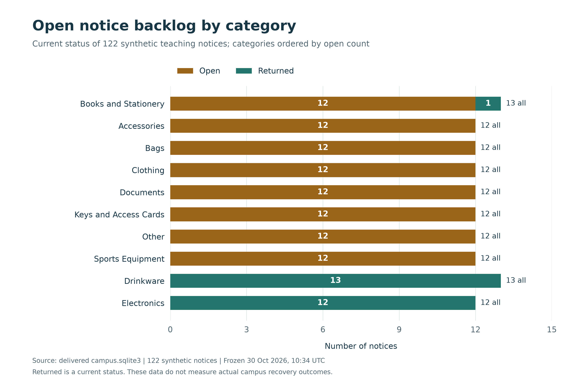
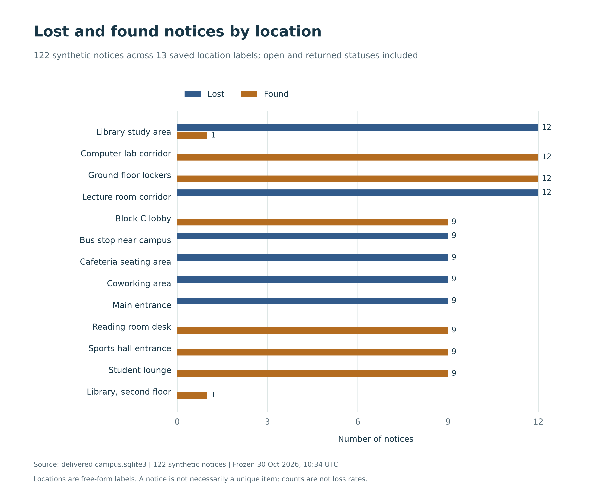
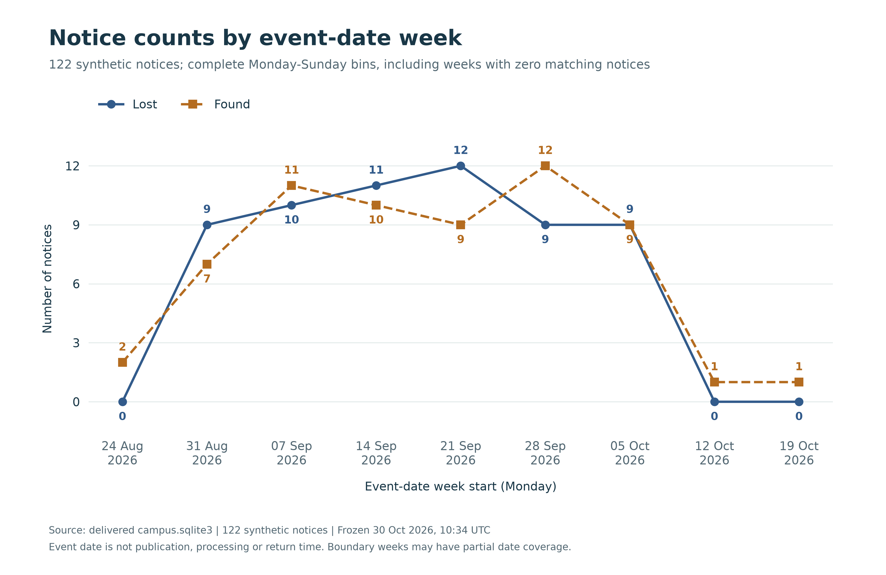
Finding we act on. The location question exposed a data-quality problem: free-text locations make counts unreliable. The recommended change (Section 9) is a fixed list of campus locations with an “Other” option. A live defense query shows the link to stored data: changing GROUP BY status (96 / 26) to GROUP BY type (60 / 62) keeps the total at 122.
A real campus could keep found items in a locker with a door sensor. We built the software side only: the administrator page /admin/smart-locker records SIMULATED door readings for locker LF-01 linked to an existing “found” notice. No sensor, microcontroller or door exists, and every record says so.
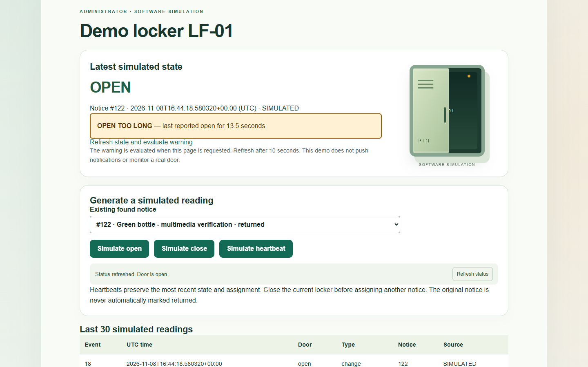
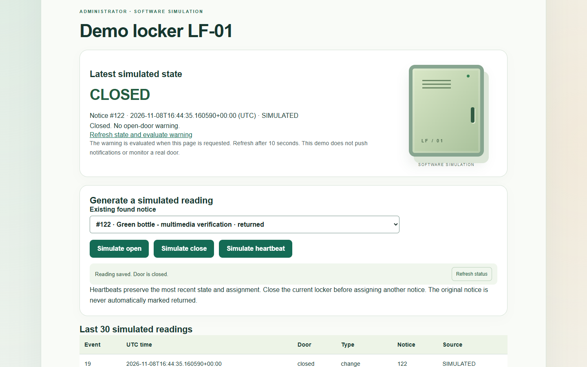
| Part | Implemented and verified | Proposed only (physical pilot) |
|---|---|---|
| Device | Admin buttons and simulate_locker.py CLI | Reed switch + Wi-Fi microcontroller |
| Network | Same-origin fetch with CSRF token, 15 s timeout, never re-sends a POST automatically | Campus IoT network, HTTPS, per-device credentials |
| Processing | Warning after 10 s, evaluated when the page is requested | Periodic rule (30 s), offline detection after 120 s |
| Storage | telemetry.sqlite3, notice reference validated, history kept; reset for a removed notice | Retention limit and automatic expiry |
| Human role | Never marks a notice returned; staff verify the claimant | Same |
Failure behaviour (tested offline in the browser). With the network cut, “Refresh status” shows “The result could not be confirmed. Refresh status before trying another action.”; after reconnecting, the same button shows “Status refreshed”. A missing “close” reading can create a false warning, which is why a person must check the locker.
| Limitation (fact) | Consequence | Next step (recommendation) |
|---|---|---|
| Sign-in only on localhost | Microsoft redirects to http://localhost:5055; the secret is typed in at each start; accounts are matched by email. | With hosting: HTTPS redirect URI, secret in a vault, store the immutable oid claim (Microsoft, n.d.-a, n.d.-b). |
| Loopback HTTP on one laptop | Only one machine can use it; a demo depends on that laptop. | Host in a Kazakhstan data centre with HTTPS; keep the loopback build for offline demos. |
| SQLite + in-memory rate limit | One writer at a time; limits reset on restart and are not shared between servers. | PostgreSQL and a shared limiter (e.g. Redis) when moving beyond one server. |
| No email notifications | Owners must check the board themselves. | Optional notification email after a matching notice is posted. |
| Free-text locations | Analytics split one place into several labels. | Fixed location list with “Other”. |
| Simulated locker | No evidence about real hardware, networks or misuse. | Small physical pilot with device authentication and retention rules. |
| One upload commit | Git does not show who wrote which part. | Feature branches and commits from each member’s own account. |
What fails first (our analysis). The single laptop and loopback binding mean nobody else can even reach the site, so access fails before load does. Once hosted, the next bottleneck is writes: SQLite allows one writer at a time, and Waitress has 4 threads, so bursts of posts and photo uploads (up to 6 MB each) would queue; SQLite’s own guidance points to a client/server database for many concurrent writers (SQLite, n.d.). Photos on one disk and the in-memory rate limit would follow. The measured 45 ms p95 is for 10 sessions on a laptop and does not predict 10,000. Plan: host in Kazakhstan behind HTTPS; move to PostgreSQL; store photos in object storage with size-checked uploads; run several app instances behind a load balancer with a shared rate limiter; add SSO so accounts are real; load-test with a tool such as Locust before launch.
Each member confirmed that the statement under their name is accurate; signatures are on the printed copy. File paths are in the repository github.com/zondbebox/SE-2623_Endterm, commit a7e5c74.
I built the account and notice workflow: local registration and sign-in, publishing and editing notices, the single-photo upload, owner and administrator permissions, and the full backup with restore check. My files are Campus_Lost_Found/app.py, templates/form.html, backup_full.py and backup_tools.py. Commits a7e5c74, ca5d0e5 and 4d91abd were pushed from my GitHub account, zondbebox. One problem I solved: the backup writer and the restore reader used different size limits for the manifest file, so a backup could be created that restore would then refuse. I made both use one shared 1 MiB limit and added three regression tests. Next time I would commit every feature separately, so the history shows who built what.
I was responsible for browsing and search, the search performance test, the SQL analytics and the user-testing method. My files are Campus_Lost_Found/analytics_routes.py, backend/analytics.py, Analysis/01-03 SQL queries, benchmark_search.py, the research timer in stage2_features.py and Testing/TASK_CARDS_EN.txt. They are in commit a7e5c74, and I am a co-author of the Final commits ca5d0e5 and 4d91abd. One problem I solved: very large numbers in the category and page filters crashed SQLite with an overflow error. I added range checks that return HTTP 400 or 404 before any query runs, plus four regression tests. Next time I would run the external user study weeks earlier, not at the end.
I worked on the smart-locker extension, the multimedia and the 360 px, keyboard and availability evidence. My files are the locker part of Campus_Lost_Found/stage2_features.py, static/locker.js, static/locker.css, templates/smart_locker.html, simulate_locker.py, static/media/CREDITS.txt and the Assignment 4 video. They are in commit a7e5c74, and I am a co-author of the Final commits ca5d0e5 and 4d91abd. One problem I solved: when the found notice linked to an open locker was deleted, the simulation could not be closed. I added a reset action that records a new closed, unassigned state and keeps the history. Next time I would test on a real phone early and re-record the video after every interface change.
Astana IT University. (2026). Final project — completed ICT project, presentation and individual defense [Course brief, ICT_Final.pdf]. Unpublished course document.
Microsoft. (n.d.-a). OpenID Connect on the Microsoft identity platform. Microsoft Learn. Retrieved November 8, 2026, from https://learn.microsoft.com/en-us/entra/identity-platform/v2-protocols-oidc
Microsoft. (n.d.-b). Quickstart: Register an application with the Microsoft identity platform. Microsoft Learn. Retrieved November 8, 2026, from https://learn.microsoft.com/en-us/entra/identity-platform/quickstart-register-app
Ministry of Artificial Intelligence and Digital Development of the Republic of Kazakhstan. (n.d.). Official website. Retrieved November 8, 2026, from https://www.gov.kz/org/maidd
Nielsen, J. (2024). 10 usability heuristics for user interface design. Nielsen Norman Group. Retrieved November 8, 2026, from https://www.nngroup.com/articles/ten-usability-heuristics/
Nurpeisova, T. B., & Kaidash, I. N. (2017). Information and communication technologies. Bastau.
OWASP Foundation. (n.d.-a). Cross-site request forgery prevention cheat sheet. Retrieved November 8, 2026, from https://cheatsheetseries.owasp.org/cheatsheets/Cross-Site_Request_Forgery_Prevention_Cheat_Sheet.html
OWASP Foundation. (n.d.-b). Password storage cheat sheet. Retrieved November 8, 2026, from https://cheatsheetseries.owasp.org/cheatsheets/Password_Storage_Cheat_Sheet.html
Pallets. (n.d.). Security considerations [Flask documentation]. Retrieved November 8, 2026, from https://flask.palletsprojects.com/en/stable/web-security/
Parsons, J. J. (2022). Computer concepts: Comprehensive (21st ed.). Cengage. Module 8: The ICT industry; Module 9: Information systems.
Republic of Kazakhstan. (2013, as amended September 14, 2026). On personal data and their protection (Law No. 94-V of May 21, 2013). Adilet. Retrieved November 8, 2026, from https://adilet.zan.kz/rus/docs/Z1300000094 (unofficial English translation: https://adilet.zan.kz/eng/docs/Z1300000094)
SE-2623 team. (2026a). Campus Lost & Found: Project Stage 1 midterm report [Unpublished project report]. Sources/Briefs/Stage1_Midterm_Portrait.pdf.
SE-2623 team. (2026b). Campus Lost & Found: Project Stage 2 endterm report [Unpublished project report]. SE-2623_CampusLostFound_ICT_ProjectStage2.pdf.
SE-2623 team. (2026c). SE-2623_Endterm [Source code repository, commit a7e5c74]. GitHub. https://github.com/zondbebox/SE-2623_Endterm
SQLite. (n.d.). Appropriate uses for SQLite. Retrieved November 8, 2026, from https://www.sqlite.org/whentouse.html
W3C. (2023). Web Content Accessibility Guidelines (WCAG) 2.2 (Success criterion 1.4.10 Reflow). Retrieved November 8, 2026, from https://www.w3.org/TR/WCAG22/
Images: all screenshots are original captures of the final build (8 November 2026); charts are original aggregations of synthetic project data; category photographs are credited in static/media/CREDITS.txt. Legal sources were read on adilet.zan.kz on 8 Nov 2026; the Russian text is authoritative.